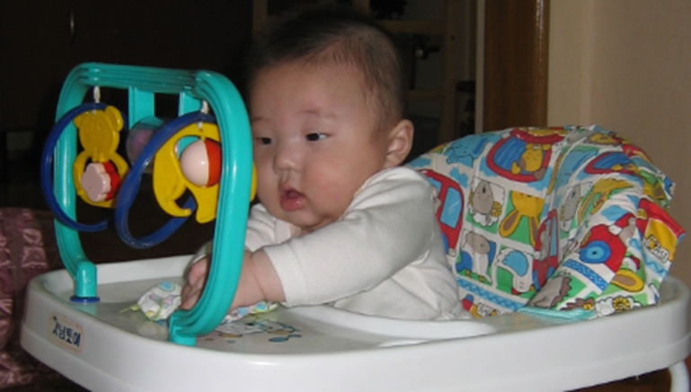

인간발달 과정 중 ‘뱃속 10개월은 100년을 좌우한다.’, ‘세 살 버릇 여든까지 간다.’라는 속담이 있듯이 생의 초기는 아이의 전 생애 과정에 지대한 영향을 미친다. 문화가 발달하고 생활이 편리한 오늘날에도 생의 초기 영아기 때의 경험은 영아기 이후까지 신체적, 정신적, 인지적 등 지속적인 관계가 이어진다는 자료가 다양하게 제공되고 있다.
어릴수록 경험했던 스트레스는 충동조절문제, 집중력문제, 수면문제, 운동신경 조절 문제등에서 어려움이 발생될 수 있다. 아이에게 밀접한 생활 환경을 위험 신호로 인식하게 되어 신체발달 뿐만 아니라 정신건강에도 부정적인 않는 영향을 미치는 미성숙시기이다. 영아기는 발달의 변화 과정, 발달에 적합한 환경, 적절한 경험은 발달의 기초를 구축시키는 중요한 요소가 양적, 질적 변화가 다양하게 이루어진다.

1. 신체발달의 기초를 구축하는 시기이다.
일반적으로 출생 후 신체는 분화된 단순한 능력에서 복잡한 능력으로 통합되는 행동으로 대체한다. 신체적 능력은 앉고, 서고, 걷고, 달리기를 하는 단계에서 몸의 전체를 사용하다가 점차 분화되고 정밀한 행동으로 나타난다. 이 시기는 신체발달을 위하여 다양한 경험을 직접적으로 할 수 있도록 환경을 조절해줄 뿐만 아니라 영양공급과 건강관리가 필요하다.
2. 인지발달의 기초를 구축하는 시기이다.
아이는 출생 이전부터 감각을 통해 학습하는 능력을 가지고 태어나기 때문에 환경에 의한 경험이 어떤 결과를 가져올 것이라는 것을 이해하기 시작한다. 영아의 인지발달을 위하여 발목이나 손목에 끈을 묶어서 모빌과 연결시키면 아이는 끈을 통하여 모빌이 움직이는 것을 알게 된다. 또한 옹알이를 하면서 부모와 상호작용의 기초를 이해하는 것이 인지발달을 이룬다. 이러한 초기 오감각에 의한 경험은 생활 주변의 상호작용에 필요로 하는 인지발달의 사고 과정이라고 한다.
피아제(Piaget)의 인지발달에 의하면 건강하고 정상발달의 아이는 자신의 환경을 조직하고 이해하면서 타고난 기능을 적절하게 사용할 줄 알게 된다고 하였다. 인지발달을 위한 능력은 발달단계에 따라 점차 정교화되고 체계화된다. 어릴수록 아이는 자신이 누구인지, 어디에 있는지, 자신이 행동하고 있는 것이 무엇인지, 무엇을 표현하고 있는지에 대하여 미각, 촉각, 후각, 청각, 시각 등 감각기관을 통하여 인지적 균형을 형성시킨다.
3. 정서발달의 기초를 구축하는 시기이다.
정서는 기본적으로 정서를 갖고 태어나지만 성장하는 동안 양육자와 환경에 의해 조금씩 변화된다. 영아의 정서발달은 내면의 감정을 일으키는 자극의 종류와 반응 양식에 따라 다양하게 표현된다. 기본적으로 뇌의 성숙이라는 생물학적 요인과 환경적 요인의 영향을 지속적으로 받으면 내재된 자신의 감정과 타인의 감정에 대처해 간다.
<정서발달 단계>
1) 신생아기 때는 기쁨, 분노, 불안 등 기본 정서가 덜 분화된 상태이지만 점차
자아인식(self awareness)이 나타나 정서적 성장이 시작된다.
2) 생후 3개월이 되면 쾌, 불쾌, 흥분으로 분화되기 시작한다.
3) 생후 5개월이 되면 불쾌에서 분노, 혐오, 공포가 분화한다.
4) 생후 3년까지 가장 많은 시간은 보내는 주 양육자에 의한 경험이 아이의 감정을 결정한다.
5) 생후 5년 정도가 되면 부끄러움, 두려움, 걱정, 분노, 흥분, 애정, 기쁨 등 대부분의 감정을 표현한다.
4. 사회성발달의 기초를 구축하는 시기이다.
아이는 가족 내에서 상호작용과 가족 이외의 사람들과 관계를 형성하면서 자신과 분리된 타인의 존재를 민감하게 인식하게 된다. 영아의 사회성발달은 아이의 욕구, 호기심 등을 응시하기, 옹알이, 모방하기, 미소짓기로 부터 시작한다. 특히 주 양육자와의 안정애착은 상호주관성이 발달하여 자기와 다른 사람에 대한 이해와 사회인지를 발달시키는 기능을 촉진시킨다.
영아는 주 양육자에게서 공감과 이해를 받으면 사회성이 높은 아이로 성장할 수 있다. 이러한 공감 능력이 높은 엄마에게서 자란 아이들이 타인의 정서에 대한 공감대를 형성할 줄 아는 것이다. 공감 능력은 곧 타인의 감정과 생각을 읽는 능력으로 이어지기 때문에, 아이의 사회성과도 연관이 깊다.
사회적 행동은 초기에 자연발생적으로 하다가 시간이 지날수록 사물보다 자신에게 상호작용을 제공하는 부모와 가족과 주변 사람들에 따라 선택적으로 강화시켜 간다. 무엇보다 어릴수록 자기와 관련된 다른 사람의 행동에 대한 기대와 예감으로 반복적인 행동을 하다가 어떤 특수한 패턴으로 분화되어 가는 중요한 과정이다.
5. 언어능력 발달의 기초를 구축한다.
언어는 본능적인 울음(소리)에서 시작하여 쿠잉, 옹알이, 몸짓언어 등을 통하여 시작한다.
1) 8~10개월 정도가 되면?
아이는 자신이 원하는 것을 나타내거나 사람들과 의사소통을 위해 비언어적인 몸짓이나 반응을 한다. 영아는 점차 말과 행동을 관찰하고 모방하면서 말투, 말톤, 억양이 명확해지고 발음 또한 강약으로 표현하게 된다.
2) 2세 정도가 되면?
아이는 "엄마 밥", 아빠 차", "우유 줘" 등 자신과 가깝게 느끼고 가장 많이 들었던 말을 나타낸다. 짧은 단어를 중심으로 간략하게 두 단어 정도 사용하여 어휘를 구사하면서 타인과의 관계를 유지해 나간다.
3) 3세 정도가 되면?
아이의 언어는 전체 문장의 의미를 표현하는 일어문과 두 개 이상의 단어를 결합시킨다. 이 시기는 이어문의 형태로 언어가 가속화된다. 영아는 유아기로 진입하는 과정이며, 사용하는 언어가 폭발적으로 증가하여 사회적 관계 형성에 결정적 역할을 한다.
이러한 언어발달은 선천적으로 언어습득제가 있다는 것과 언어적 경험과 학습에 의한 후천적 생활환경과 양육자의 역할에 의해 개인적인 차이가 발생한다. 영아기의 언어발달 결손은 누적되어 다음 단계의 언어능력뿐만 아니라 자아발달과 전인적 발달에 지속적으로 영향을 미치기 된다.
2022.01.15 - [분류 전체보기] - 뇌의 구조와 기능 - 영아기에 성장급등기
뇌의 구조와 기능 - 영아기에 성장급등기
뇌의 구조와 기능은 영아기에 가장 중요 출생 시 신생아의 두뇌는 평균 300~400g 정도로 성인의 25~30% 정도에 불과하지만, 2세경이 되면 75%까지 증가하는 두뇌의 성장급등기(brain growth spurt)를 맞이
think-sis.co.kr